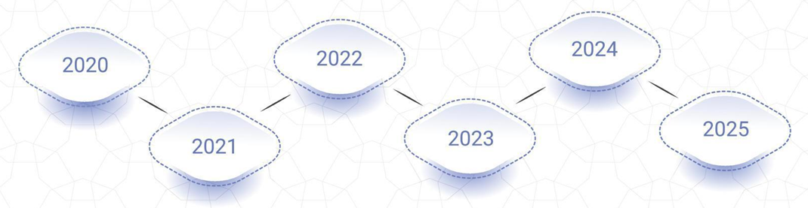

2020 - Had to leave my job overseas because of COVID-19
2021 - Started working in Sales
2022 - Started learning about Python, SQL, and Microsoft Excel during my free time after work
2023 - Continuously learning after work
2024 - Finished up my Portfolio and landed my data analyst internship at an Australian Startup
2025 - Started learning C#, C++, and started studying in CIIT